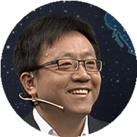
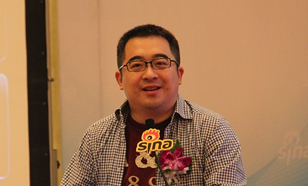
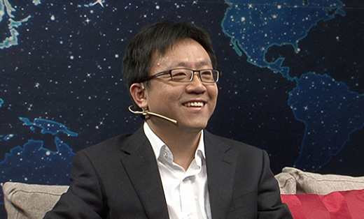
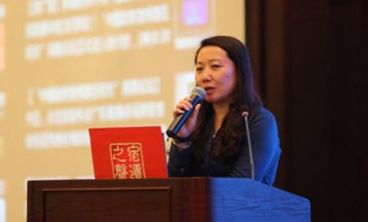

@景� � 微博副总裁
2000年2月� 盟新浪，现任微博副总裁，香港大学国际工商管理硕士。葛景� �先生极具前瞻性的战略眼光，通过一系列创新性的整合营销� 播，构建了新浪以及新浪微博的品牌管理、产品推广体系。新浪微博在葛景� �主导的一系列市场活动中，品牌影响力与市场� 有率日益增强，成为全球华人首选的社交媒体平台，同时带来了新浪母品牌的年轻化重塑。
@申晨微博商学院首席讲师 资深媒体评论人
他具有8年人力资源管理经验，毕业指导讲座《饭碗》被誉为最受学生欢迎的讲座。他是中国教育电视台《职来职往》节目嘉宾，尤其擅长为职场人的心理健康、职业生涯及职场中面临的种种困惑提供专业指导，被很多职场人亲切地称为“职场知音”。他点评选手时一针见血，往往会为他们打开一扇属于自己的门。
@杜子建 华艺� 媒集团创始人兼首席战略官
先后为国资委、中国电信、招商银行、北大MBA、清华MBA、三星电子、创维、新浪乐居、南都� 媒等近百家单位机构做过专题演讲和培训。� 其独特的思维和不拘一� �的形象，被业界成为“营销奇人”，《EMBA视界》总编刘元煌誉其为“中国企业家必须会见的20人之一”。

@蒋政文2013年褚橙推广策划及负责人

@李峥嵘新浪地方业务&政府合作副总经理
@敏lisa微博商学院总监
嘉宾
介绍
介绍